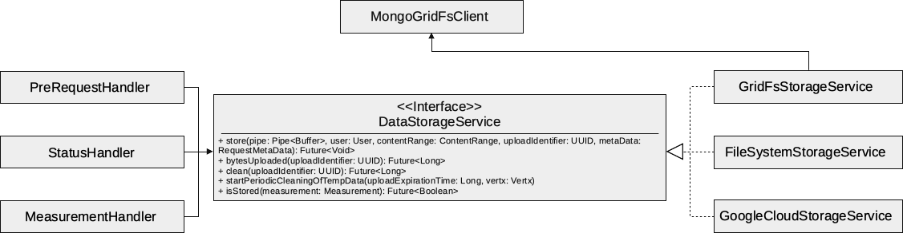

Package de.
Contains the interface to store data in Cyface and several implementations for that interface.
Those implementations provide support for storing data in GridFS, on the local file system and in Google Cloud storage.
The following image shows an overview of the interface and how it is embedded in the Cyface data collector.
Types
Implementations of this interface realize the storage of uploaded measurements, and provide information about the status of the upload.
Storage service to write data directly to the local file system. This implementation should only be used for single node installations. On clustered Vert.x repeating uploads is not going to work.
A storage service to write data to a Google cloud store.
A storage service to write the data to Mongo database Grid FS.
The type of an upload Status, like if it was completed or not.